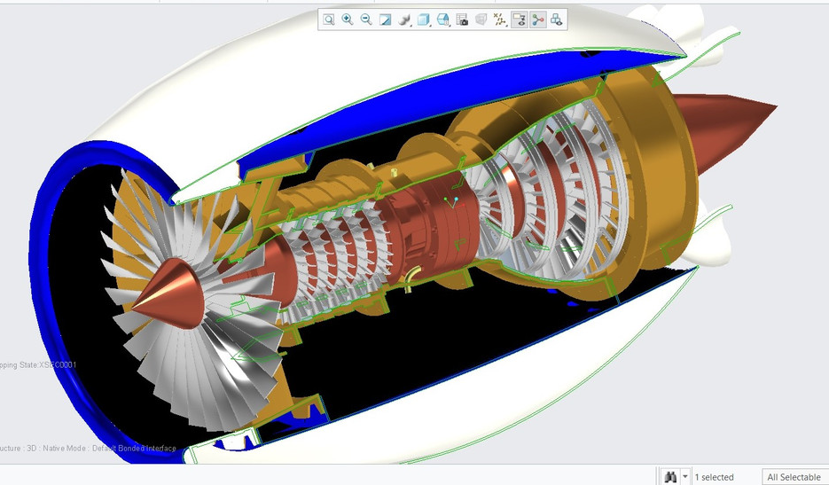

Flight Computer Dev Board
ARM-based flight computer development board for CubeSat and UAV prototyping.

$499 / each
Overview
This mock flight computer development board represents the kind of avionics hardware used in student CubeSat, smallsat, and UAV projects. It is included here as a sample product for the CSC 317 OrbitCart term project.
Key Features
- ARM-based processor for real-time control experiments
- Interfaces for IMU, GPS, and telemetry radios
- Expandable I/O for actuators and sensors
- Designed as a teaching/demo product only